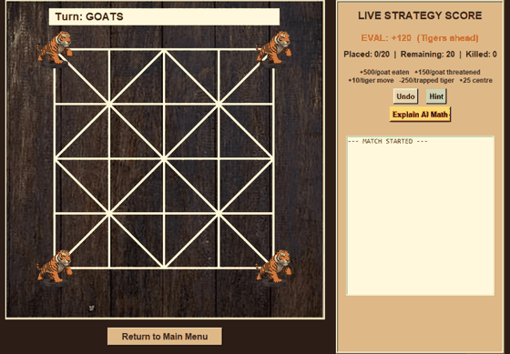
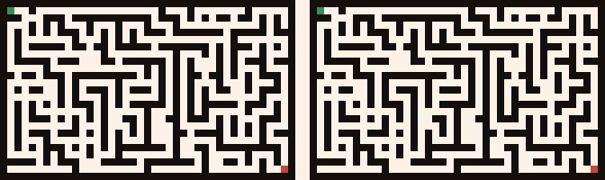
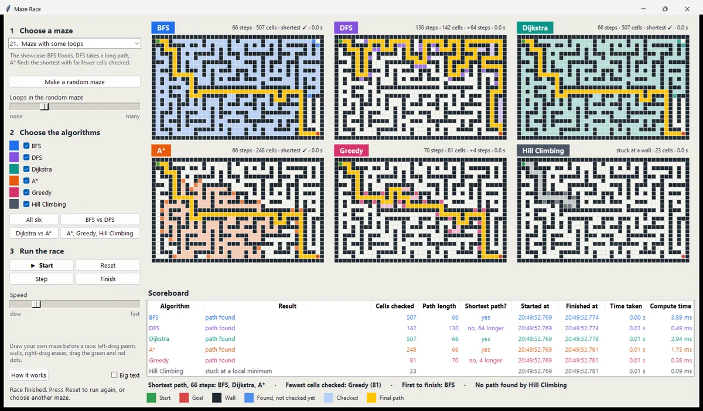
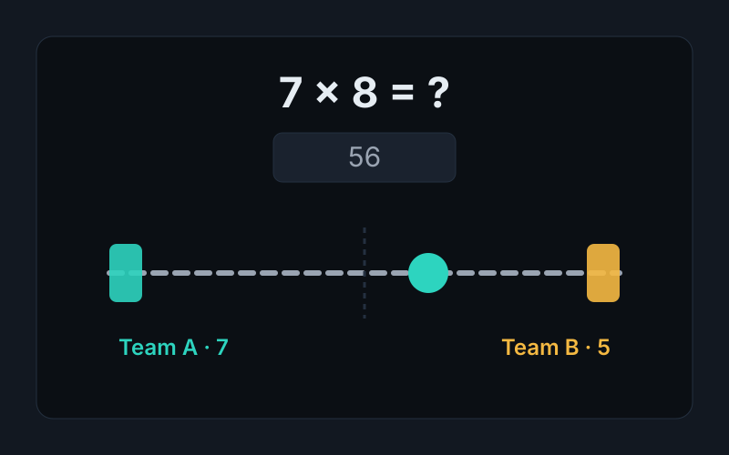

Bagh Chal
The traditional Nepali Tigers-and-Goats game with a minimax AI (alpha-beta pruning), three difficulty levels, hints, and an “Explain AI math” window.
Brishab KC · Kathmandu
BTech AI student at Purbanchal University and frontend developer. I build classroom software and games that show how search, learning and logic actually work.
Same maze, two algorithms. BFS floods, A* aims.

The live demo needs a wider screen. This is the same race, recorded.
The traditional Nepali Tigers-and-Goats game, in your browser. The rules engine and the minimax AI are my desktop game's Python, ported line for line.
Goats to place
| Term | Count | Weight | Points |
|---|---|---|---|
| Total (positive favours tigers) | 0 | ||
Make a move and the AI will show how many positions it searched.
Things I built to understand something, then kept polishing. Each one runs, has a README, and most have tests.

The traditional Nepali Tigers-and-Goats game with a minimax AI (alpha-beta pruning), three difficulty levels, hints, and an “Explain AI math” window.

Watch BFS, DFS, Dijkstra and A* race through the same maze side by side. Built for the classroom: 26 mazes, a scoreboard, and a “How it works” page.

Only things I can talk about in an interview. No percentage bars.
Pulled live from the GitHub API when this page loads.
Loading from the GitHub API… If it does not load, everything is on my GitHub profile.
I study artificial intelligence at Purbanchal University in Kathmandu. I build small, finished tools for classrooms: board games with an AI you can interrogate, and visualizers that show what a search algorithm is doing step by step. Right now I am learning how retrieval-augmented generation works by building one from scratch.